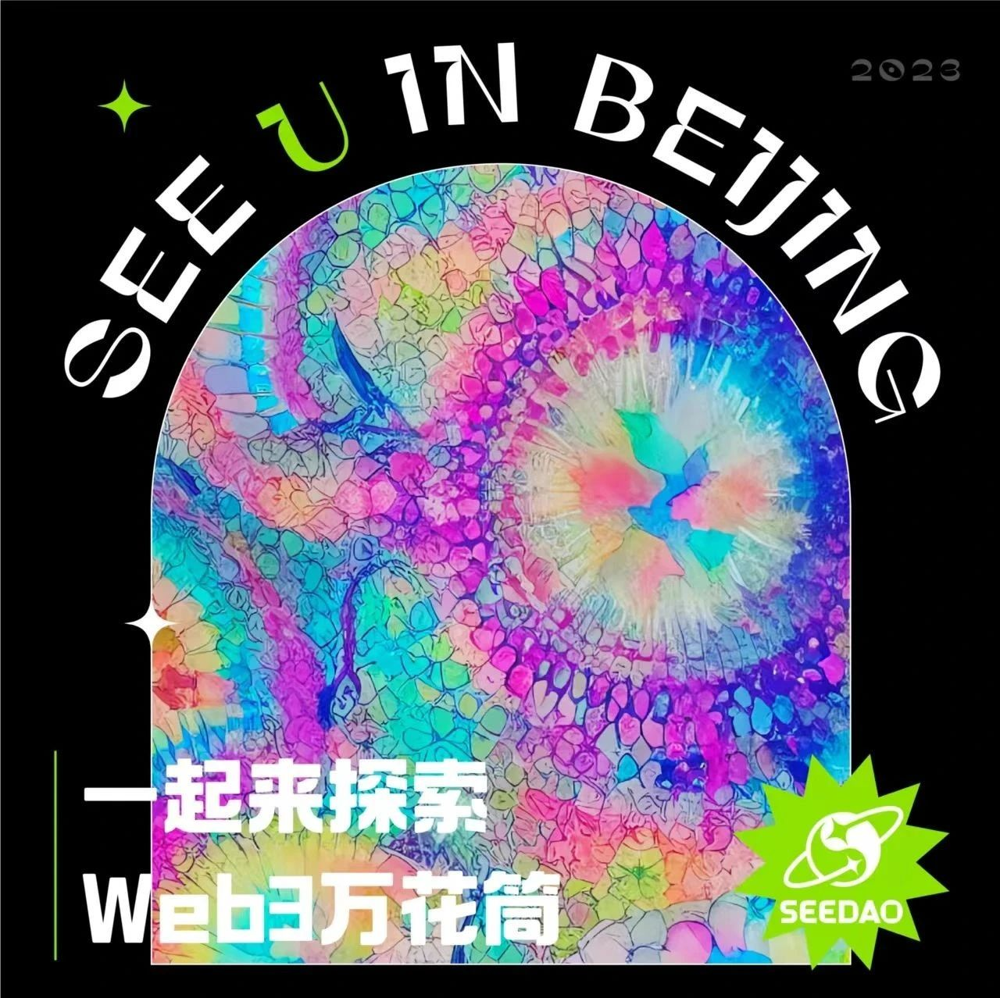
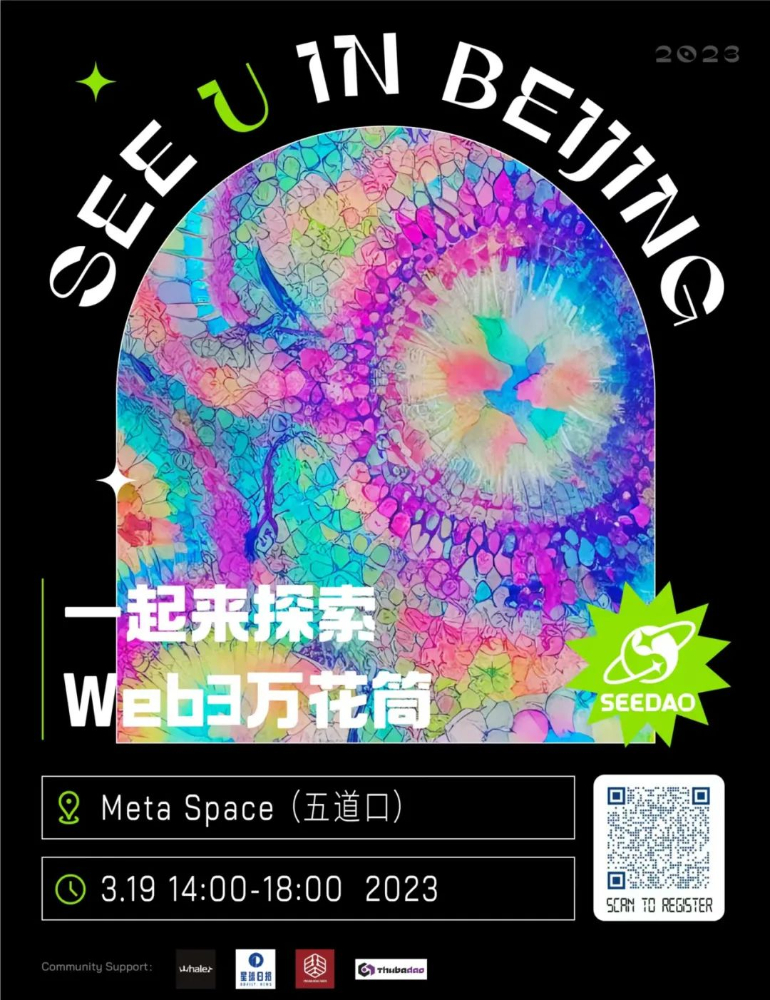

← Back to Archive
线下活动预告 | SeeDAO北京 — 一起来探索Web3 万花筒
作者: SeeDAO
发布时间: 2023-03-14 15:41:01
活动详情让大家期待已久的Seedao 2023年首场活动就要开始啦，我们邀请到了6位嘉宾来分享。


活动详情 让大家期待已久的SeeDAO 2023年首场活动就要开始啦，我们邀请到了6位嘉宾来分享Web3，主题涵盖了Dao，NFT，投资，数字游民生活及趋势分享等等。活动还没开始已经感受到很多小伙伴的热情，那还等什么，快来报名吧，一起See U in Beijing😄 ⏰ 2023年3月 19 日14:00-18:00 周日（北京当地时间） ☕️ 北京市海淀区Meta Space Coffee （五道口） 报名链接 https://8002756971706.huodongxing.com/event/4693017929800 Agenda 🎤 14:30-14:45：SeeDAO治理及onboarding介绍。由SeeDAO的Laura为大家详细介绍SeeDAO治理及onboarding的相关内容。 👥 14:45-15:00：SeeDAO经历及创业项目经历分享。由SeeDAO的老会员Louis与大家分享他在SeeDao社区中的经历和所参与的项目。 💡 15:00-15:15：Web3社区与Dao的感悟。来自WhaleDao的创始人崔棉大师将分享他对Web3社区和Dao的感悟，让我们一起了解区块链的未来。 💰 15:15-15:30：NFT领域的机会。来自X Research Dao的发起人和资深研究员Andy将与大家分享NFT领域的机会和发展趋势。 📈15:30-15:45：投资及远程办公经验分享。资深交易员Magi将分享她的经验和见解。 🚀15:45-16:00：Web3趋势分析。PKUBlockchain的核心成员、LegalDao的联创Turing将分析Web3的发展趋势，为大家揭示区块链的未来。 🎉 16:00-16:15：经历与经验：Web3.0时代的媒体与个人参与。清华区块链协会BD leader EudemoniaCC将为大家分享她的经历与经验，敬请期待。 🗣️ 16:15-18:00：Q&A及自由交流。活动最后，我们将为大家提供Q&A环节，与大家分享更多有趣的内容。 关于Seedao SeeDAO是一个DAO孵化器，致力于为华语世界培养DAO的人才，营造适合Web3创新发生的氛围，促使Web3先锋的理念、产品和内容在这里诞生。截至目前，SeeDAO已形成翻译、宣传、运营、设计、艺术、建筑、产品、开发、投研、NFT Club这十个公会。SeeDAO致力于建设华语世界最大的数字城邦。 如果您想赞助这场活动，请添加微信号:lqjlaura 沟通。